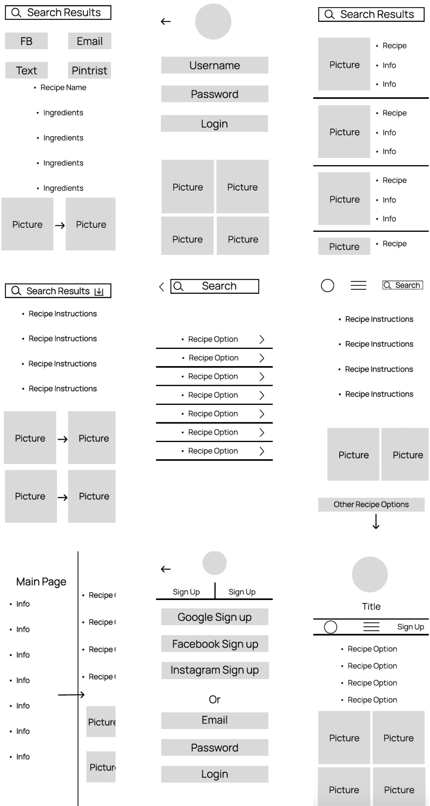

"This recipe app provides users with a convenient way to discover, save, and follow cooking instructions for various dishes. Captain cook includes features like searching for recipes, creating shopping lists, and step-by-step cooking instructions to assist users in preparing quick delicious meals at home."
Market Research - By completing an competitive analysis between these two well known apps, this helped me distinguish the strengths and weaknesses of each app. I understood what to implement and what to take out in Captain cook. Again my main focus was to give users the common features they enjoy but also add a little more that what the typical recipe app has to offer.
- Help users stay organized with recipes
- Help users save time throughout the day
- Motivate users to stay minimalistic without waisting food
- Minimize the amount of stores they shop at for ingredients
- Making sure everyone feels included and apart of the cooking experience from all different nationalities.
- Provide substitute options for recipes without spoiling the dish.
Objectives
User Personas
User personas were a great use of time because it helped prioritize the users as the center point of my design. Always referring back to their goals or frustrations constantly aided my design process. Another beneficial part was that each user had different ideas/feedback to add.
User Flow
The crucial part of a userflow in UI design is to ensure a seamless and intuitive journey for the user as they interact with a digital product. This involves identifying the key steps, actions, and decision points that users will encounter while achieving their goals within the interface. My flows included food categories, saving recipes, sharing recipes, meal planning, shopping lists and more.
Low Fidelity Wire Frames

Challenges along the way - Structuring the content in a logical and organized manner was more complex than initially anticipated. Deciding on the best way to categorize and present recipes, as well as providing search and filter options, required thoughtful information userflow decisions.
Mid Fidelity Wire Frames
By incorporating this feedback into the mid-fidelity wireframes, I was able to make important usability improvements before investing time and resources in creating high-fidelity designs, ultimately leading to a more user-friendly and effective cooking recipe app.

High Fidelity Wire Frames - My High-fidelity wireframes are the polished and detailed visual representations of my responsive web app. I tried aiming to have a very basic/straight forward interface for any chef to potentially use. This all included design elements, colors, typography, etc

The moodboard aims to convey a sense of wholesomeness, sustainability, and a connection to nature, making it a valuable source of inspiration for design projects related to food, wellness, or eco-friendly products.